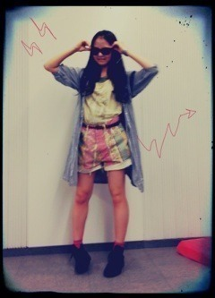

| 2012/08 27 Mon | 216回目*marika |
いつも読んでくださってる方、
初めて読んでくださった方、
コメントしてくださった方、
ありがとうございます。
まりっかまりっか
やはー買い物したいなー
変な服の欲しいな。
とぶつぶつ思いながら
改札でピッしたら
残高が46円だった。
わお

「46」に反応してしまうのは
私だけじゃないはず。
...

めっちゃ前の私服

おでこ全開だぁ
PANAMABOYのボトムかわいい。
...
またあたたかいコメント
ありがとうございます; ;
泣きそうになる、嬉しいなぁ。
**********
 札幌には全国握手会来ますか??
全国握手会大阪では
札幌には全国握手会来ますか??
全国握手会大阪では
ないんですか～？
 北海道行きたいよ><
北海道行きたいよ><
ミニ握で行ったもん‼
全握は今の予定だと...
名古屋、幕張メッセの2つです

大阪...なんでないんやろ。
まりか的には秋って
言ったら何の秋？
おしゃれの秋‼
なんだかんだ一番遊べる季節。
冬もそうだけど、
重ね着を楽しめるもんね♪
過ごしやすいのは秋かもね‼
よしゃ秋服買いに行くぞ

(๑•́ ₃ •̀๑)←どう思う？
ぷぅってしてる^^笑
真洋がこんなの描いてそう笑
大阪の個別会いに
行っていいかな？
嬉しいっっっ


ぜひ‼てゆうか握手しましょう

ケータイの色は何色ですか??
おれは、HTC J レッドだ

しゃきーん
***********

若様。
まりか
コメント(144)
2012/08/27 01:06